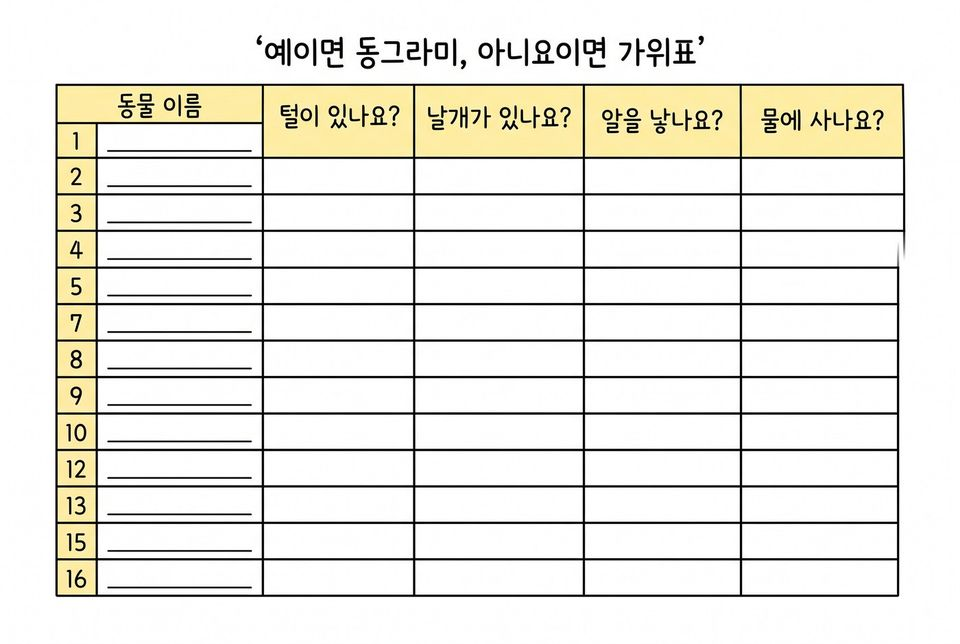
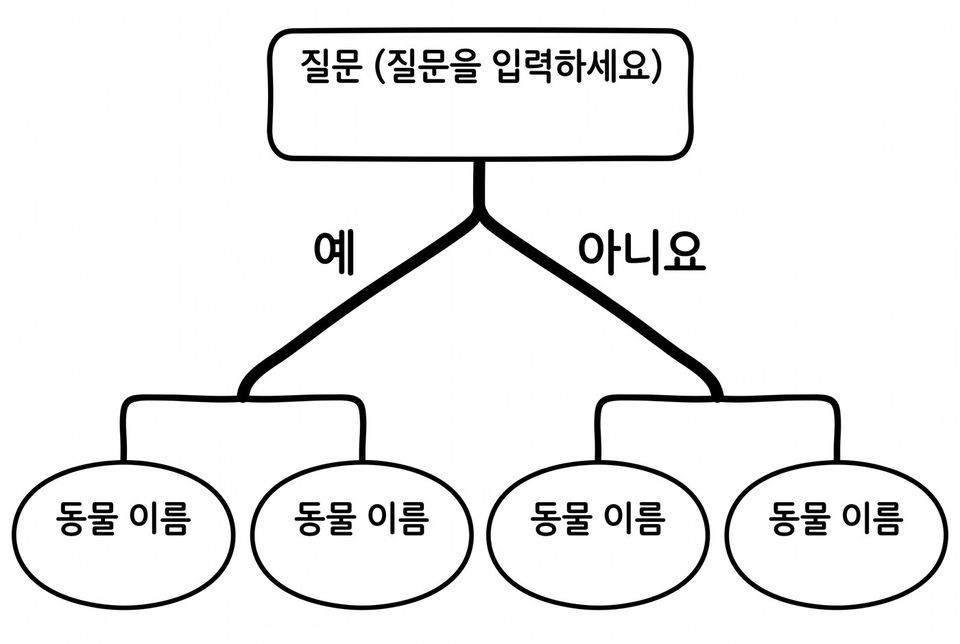

6학년 13~14차시 규칙으로 판단하는 인공지능 [6실인공지능03-01]
스무고개 대결로 남은 후보 수를 세고 질문 순서를 가지 그림 게임판으로 나타내기
학습 문제 — 스무고개 대결로 남은 후보 수를 세며 동물을 찾고, 질문 순서를 가지 그림으로 나타내 봅시다.
개요
| 성취기준 | [6실인공지능03-01] 사람의 판단 지식을 규칙으로 옮기는 놀이와 프로그램 만들기로 규칙 기반 인공지능의 판단 과정을 체험한다. 연계 성취기준: [6실05-05] |
|---|---|
| 핵심 역량 | 지식정보처리 역량, 창의적 사고 역량 |
| 핵심 기능 | ① 일상생활의 문제를 해결하기 위한 알고리즘 구상하기 ② 후보의 속성을 표로 나타내기 ③ 스무고개 대결에서 질문마다 남은 후보 수를 세어 기록하기 ④ 질문 순서를 가지 그림 게임판으로 표현하기 ⑤ 새 후보로 시험하고 통하지 않는 곳 고치기 |
| 가치 태도 | 생활 속에서 컴퓨터를 활용해 해결 가능한 문제를 탐색해 보려는 자세 통하지 않는 곳을 찾아 끝까지 고쳐 보려는 자세 |
교수학습 활동
13차시 도입 동기 유발 · 학습문제 제시13차시 전개 활동1. 후보 열여섯 장 속성표 채우기 · 활동2. 짝과 스무고개 대결14차시 전개 활동3. 가지 그림 게임판 만들고 짝이 따라가기 · 활동4. 새 카드 여덟 장으로 시험하기14차시 정리 배운 내용 정리 및 의뢰 해결 보고 · 다음 의뢰 예고
13차시도입8분
동기 유발
- 칠판에 붙인 동물 카드 열여섯 장 소리 내어 읽기
- 교사가 정한 동물을 맞히는 학급 스무고개 한 판 하기
- 친구들이 말한 첫 질문을 칠판에 그대로 적어 두기
- 병설유치원 선생님의 의뢰 듣기: 동생들과 함께할 동물 맞히기 게임판 만들기
- 오늘 미션: 질문으로 답을 빨리 좁히는 방법 찾기

학습문제 제시
- 스무고개 대결로 남은 후보 수를 세며 동물을 찾고, 질문 순서를 가지 그림으로 나타내 봅시다.
준비물필기구
자료스무고개 활동지, 동물 카드 열여섯 장, [도입] 상황 그림
유의점규칙 기반 6차시 중 이 시간은 질문 순서와 가지 그림(결정 트리 표현)을 다룬다.
유의점첫 질문의 좋고 나쁨을 이 자리에서 판정하지 않는다.
유의점학급 스무고개는 예·아니요로만 답하고 다섯 질문 안에 끝낸다.
유의점카드 게시와 활동지 배부 시간을 도입 시간에 포함한다.
13차시전개32분
활동1. 후보 열여섯 장 속성표 채우기 (12분)
- 오늘 찾을 동물이 열여섯 장 안에만 있음을 확인하기
- 날개가 있는지, 물속에서 사는지 칸에 표시하기
- 다리가 넷인지 여섯인지, 사람이 많이 기르는지 칸에 표시하기
- 판정이 갈리는 칸은 학급 약속을 정해 아래에 적기
- ‘예’가 여덟 마리쯤인 칸을 찾아 동그라미 치기

활동2. 짝과 스무고개 대결 (20분)
- 각자 후보 한 마리를 정해 종이에 적어 엎어 두기
- 번갈아 한 질문씩 묻고 받은 답 적기
- 질문을 한 번 할 때마다 남은 후보 수를 숫자로 적기
- 먼저 맞힌 사람이 1판을 이기고, 쓴 질문 수를 짝과 견주기
- 2판은 남은 후보를 반씩 나누는 질문만 골라 다시 대결하기
- 도전: 네 번 안에 반드시 맞히는 질문 순서 찾기
준비물필기구
자료스무고개 활동지, 동물 카드 축소판(짝별), 속성표 보기
유의점이기고 지는 것보다 질문 수가 줄어든 까닭을 찾는 데 초점을 둔다.
유의점짝을 지을 수 없는 학생은 교사가 답하는 사람이 되어 준다.
유의점남은 후보 수를 세기 어려운 학생은 축소판 카드를 뒤집어 가며 세게 한다.
14차시전개33분
활동3. 가지 그림 게임판 만들고 짝이 따라가기 (18분)
- 2판의 질문 순서를 8절지에 동생용 가지 그림 게임판으로 옮기기
- 갈림마다 질문을 쓰고 두 가지에 ‘예’와 ‘아니요’ 적기
- 가지 끝에 남는 후보 이름 빠짐없이 적기
- 짝의 게임판만 보고 정해진 동물을 말판으로 따라가기
- 막힌 지점을 짝에게 표시해 주고 그 자리에서 고치기
- 재료 창고의 병뚜껑에 동물 그림을 붙여 말 만들기

활동4. 새 카드 여덟 장으로 시험하기 (15분)
- 새 후보 카드를 한 장씩 자기 게임판에 넣어 따라가기
- 끝까지 감·막힘·엉뚱한 끝 가운데 하나를 골라 적기
- 막히거나 엉뚱한 끝으로 간 후보 하나 고르기
- 질문을 더 정확한 말로 바꾸거나 갈림을 하나 더 넣기
- 고친 뒤 앞의 카드 두 장을 다시 따라가 결과 적기
- 게임판에 2.0 표시를 하고 고친 곳에 색 테이프 붙이기
준비물필기구, 8절지, 병뚜껑 말, 색 테이프
자료가지 그림 활동지와 보기, 새 후보 카드 여덟 장, Code.org ‘How AI Makes Decisions’(확장)
유의점그림 솜씨와 글씨체는 보지 않고 갈림과 예·아니요 표시만 본다.
유의점짝이 따라가는 동안 그린 사람은 말로 설명하지 않고, 고치기 전에 결과부터 적게 한다.
유의점빨리 끝낸 학생은 엔트리 묻고 대답 기다리기·만일 블록으로 첫 두 갈림을 옮겨 보게 한다.
유의점Code.org 자료는 영어 화면이 많아 빠른 학습자 확장이나 가정 연계로만 쓴다.
14차시정리7분
배운 내용 정리 및 의뢰 해결 보고 (5분)
- 옆 모둠과 게임판을 바꾸어 동물 한 마리를 따라가 보고 별 스티커 붙이기
- 후보를 반씩 나누는 질문이 질문 수를 줄이는 까닭을 내 기록의 숫자를 들어 쓰기
- 새 자료가 들어와 게임판이 통하지 않을 때 할 일 말하기
- 별을 많이 받은 게임판을 유치원 동생들에게 전달할 묶음으로 모으기
다음 의뢰 예고 (2분)
- 체육 선생님의 의뢰 알기: 잰 온도를 규칙표로 판단하는 기온 알리미 만들기
- 활동지 두 장을 함께 정리해 제출하기
자료가지 그림 활동지, 별 스티커
유의점프로그램이 스스로 생각해서 규칙을 고친다고 말하지 않는다.
유의점쓰기가 어려운 학생은 기록표의 숫자를 짚으며 말로 확인한다.
유의점결석·미제출 학생은 보충 확인 시점을 정한다.
평가 계획
컴퓨팅 사고력 · 질문 순서의 표현과 시험을 통한 수정
후보를 반씩 나누는 질문의 쓸모를 남은 후보 수로 설명하고, 질문 순서를 가지 그림으로 나타내 고칠 수 있는가?
| 수준 | 평가 기준 |
|---|---|
| 매우 잘함 | 질문마다 남은 후보 수를 빠짐없이 적고 두 판의 질문 수 차이를 자기 숫자를 들어 설명한다. 짝이 같은 끝에 도착하는 가지 그림 게임판을 만들고, 새 카드 여덟 장을 모두 시험해 고친 뒤 다시 따라간 결과까지 적는다. |
| 잘함 | 남은 후보 수를 적어 두 판의 질문 수 차이를 밝히고, 짝이 따라갈 수 있는 가지 그림 게임판을 만들며, 통하지 않는 곳을 한 곳 이상 고쳐 다시 따라간 결과를 적는다. |
| 보통 | 남은 후보 수 기록이나 예·아니요 표시 가운데 일부가 빠져 짝이 한 지점에서 막히고, 고친 뒤 다시 따라가 확인하지 못한다. |
| 노력요함 | 교사가 남은 후보를 함께 세어 주고 갈림 하나를 짚어 준 뒤에도 질문에 따른 후보 수 변화를 적거나 가지 그림의 갈림을 만드는 데 어려움이 있다. |
| 미관찰 | 결석이나 미제출로 확인하지 못한 경우. 낮은 성취로 적지 않고 따로 기록한 뒤 보충 확인 시점을 정한다. |
평가 방법 활동지 분석 · 산출물(게임판) 분석 · 구술 확인 · 관찰
연동 도구·링크
과정안에 나오는 도구가 저절로 걸립니다. 수업 전에 학교망에서 열리는지, 블록·메뉴 이름이 바뀌지 않았는지 확인하세요.
엔트리 ↗블록 코딩, 인공지능 블록, 데이터 분석(테이블·차트)계정: 학생 계정 없이 만들기 화면 사용 가능(저장은 교사 계정)엔트리 사용 설명서 ↗엔트리 안내Code.org How AI Works ↗인공지능이 판단하는 방법 영상(확장·가정 연계)계정: 필요 없음
내 수업 링크
학급 패들렛, 엔트리 작품, 활동지 주소처럼 이 차시에 쓸 링크를 걸어 둡니다. 이 브라우저에만 저장되고 밖으로 보내지 않습니다. 학생 이름이 든 주소는 넣지 마세요.